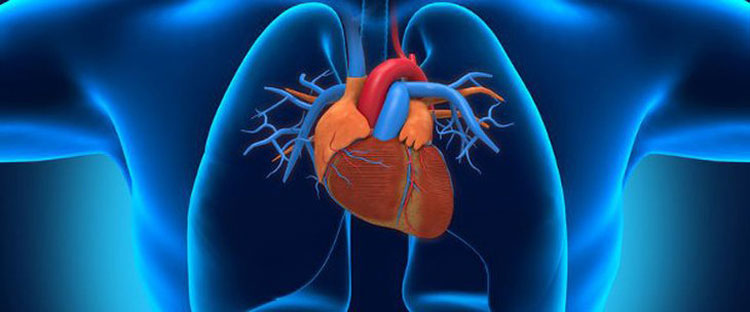
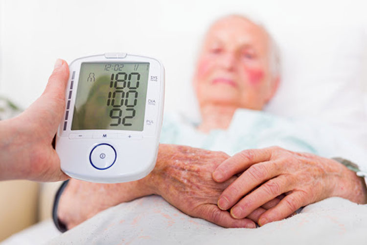

HIPERTENSIÓN ARTERIAL: CÓMO VENCER UNA ENFERMEDAD QUE MATA A UNO DE CADA CINCO DESPUÉS DE LOS 40
19.08.2021Las enfermedades cardiovasculares son la causa más común de muerte en personas en todo el mundo. Hasta 600 personas mueren cada día a causa de la presión elevada en el mundo. Es por eso que debe ser capaz de reconocer los síntomas principales, así como saber cómo hacer para que la presión siempre sea normal.
El principal signo de hipertensión es el aumento en la presión arterial. Esto se debe a que la luz en los vasos pequeños disminuye y dificulta la circulación de la sangre. El corazón tiene que esforzarse más para mover la sangre a través de los vasos.

10 SÍNTOMAS PRINCIPALES:
- Molestias o dolores en el pecho
- Falta de aliento o ataques repentinos de asfixia
- Insomnio
- Pulso acelerado o pulso débil
- Dolores de cabeza
- Presión superior a 140/90
- Presión inferior a 90/60
- Obesidad, diabetes o problemas de tiroides
- Hinchazón
- Predisposición hereditaria
¿Su presión es normal?
- 120/80- parámetro normal a los 20-40 años
- 135/90-parámetro normal a los 40-60 años
- 140/90-hipertensión leve
- 150/100-hipertensión severa
Los estudios demuestran que el aumento de la presión es característico de uno de cada tres habitantes del planeta. En promedio, la hipertensión acorta la vida de una persona de 5 a 10 años. Para evitar consecuencias graves, es necesario determinar la progresión de la hipertensión:

Primer grado
El paciente se vuelve emocionalmente inestable, a menudo tiene dolor de cabeza. La presión salta, puede bajar por sí sola, sin el uso de medicamentos.
Segundo grado
El paciente a menudo tiene dolor de cabeza, siente congestión en el área del corazón, el músculo cardíaco se debilita, cualquier actividad física causa dificultad para respirar. La presión a menudo sube, casi nunca baja a los valores normales.
Tercer grado
Se desarrolla insuficiencia cardíaca. La sangre se vuelve más viscosa, los vasos se estrechan, causando una deficiencia de oxígeno en el corazón. Debido al desarrollo de la enfermedad isquémica.
La hipertensión, como cualquier otra enfermedad, es más tratable en la etapa inicial. Especialmente vale la pena preocuparse por aquellas personas cuyos familiares han sufrido enfermedades del corazón; en la mayoría de los casos, la hipertensión se convierte en una enfermedad hereditaria.
La medicina de hoy ofrece una gran cantidad de remedios para combatir el aumento de la presión. Pero a menudo, en lugar de luchar contra la causa raíz de la enfermedad, solo silencian temporalmente los síntomas. El peligro de tal tratamiento es que un accidente cerebrovascular o infarto puede alcanzar en cualquier momento.
La buena noticia es que el 90% de las enfermedades cardiovasculares se pueden prevenir. Cómo no estar en la zona de riesgo y curar la hipertensión, nos cuenta Pedro Hernández, médico jefe del centro cardiológico de medicina probatoria.
En el último Congreso de cardiólogos, a los profesores se les dio un medicamento para la hipertensión: . La farmacología ha avanzado mucho y ha logrado sintetizar un fármaco capaz de combatir la causa de la hipertensión, como lo demuestran muchos estudios.
adelgaza la sangre, actúa sobre los vasos obstruidos, limpiándolos y expandiéndolos. La contaminación vascular por colesterol es la principal causa de la hipertensión
es un remedio absolutamente seguro y realmente efectivo en el tratamiento de la hipertensión. Reduce el flujo de impulsos que estrechan los vasos sanguíneos, calma el corazón, reduce la carga en el músculo. Las sustancias incluidas afectan las raíces de los nervios espinales y, por lo tanto, tonifican los vasos para una mejor circulación sanguínea.
Al Interactuar entre sí, los componentes de comienzan a trabajar en la reparación y el fortalecimiento de las paredes de los vasos. Los estudios clínicos han demostrado que después de 7 días, incluso los pacientes más graves sienten una mejora en su bienestar general. La presión comenzará a disminuir, y con ella pasa la sintomatología: dolores de cabeza, mareos, meteorosensibilidad, insomnio.

Durante el estudio piloto del efecto del medicamento (1.253 voluntarios participaron en las pruebas), se identificó lo siguiente:
- reduce el colesterol (83% de los sujetos notaron ligereza y falta de dificultad para respirar);
- mejora el estado del sistema cardiovascular (en el 79% de los casos, se observa una reducción en el dolor agudo en el área del corazón);
- inhibe el desarrollo de aterosclerosis (95% de los sujetos vieron una mejora en la circulación sanguínea);
- reduce la presión arterial (el 87% de los sujetos dejaron de tener dolores de cabeza y tinnitus, la frecuencia cardíaca disminuyó).
Otra buena noticia: está incluido en el programa social del gobierno y se puede comprar en el sitio web del fabricante a un precio preferencial, con un 50% de descuento. Hasta el momento, más de diez mil personas han participado en el programa social. La promoción durará hasta el .
No es bueno bromear con la presión. Así que es mejor no derribarla, sino tratarla.
¡Gracias por el excelente artículo! A todos los hipertensos les será útil leer y aprender por sí mismos algo nuevo en términos de tratamiento
No creo que la presión se pueda bajar no una vez, sino por mucho tiempo.
Si la bajas con algo, entonces sí, es un efecto de una vez. En cambio el limpia los vasos sanguíneos y adelgaza la sangre. Por lo tanto, la hipertensión desaparece.
Qué buena droga, deben comprársela.
Mi terapeuta también me recetó este medicamento, aunque hasta ahora no tengo hipertensión como tal. solo la presión a veces se sube.
Pues eso significa que tienes hipertensión. Con la presión es mejor no bromear. Mi padre murió de un infarto, mi madre ya ha tenido dos accidentes cerebrovasculares. Y con mis años siento que las enfermedades del corazón llegarán también... pero ahora hay una oportunidad de estar saludable. Cuando mi madre sufrió el segundo accidente cerebrovascular , los médicos le enviaron . Quiero decir, este es un remedio realmente efectivo. La recuperación de mamá es sorprendentemente rápida. La presión se estabiliza y se normaliza el bienestar general .
También tengo la presión alta, tengo que intentarlo
¡No hay nada mejor que los remedios populares!
Yo también pensaba eso antes, ¡pero mi error casi me costó la vida! Me trataron exclusivamente con recetas populares y casi termino en la tumba ... Bueno, todo salió bien. Y se convirtió en mi esperanza para vivir muchos años. Tan pronto como comencé a beberlo, la presión pasó inmediatamente a 125-80. Y los dolores de cabeza se han ido. Me gusta que sea natural, sin químicos. Al igual que un remedio popular, solo que realmente ayuda a curar la hipertensión e incluso previene el desarrollo de la aterosclerosis.